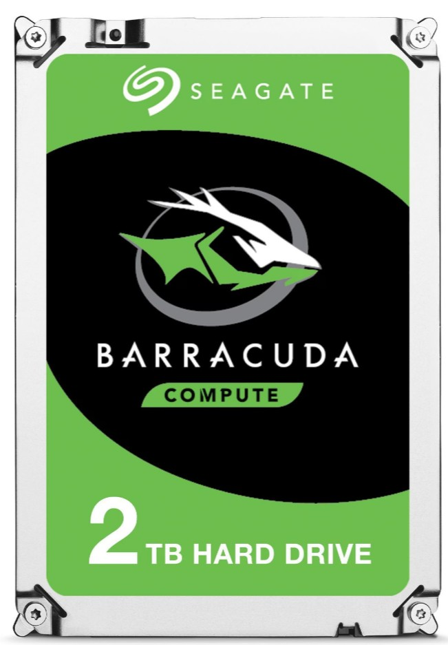
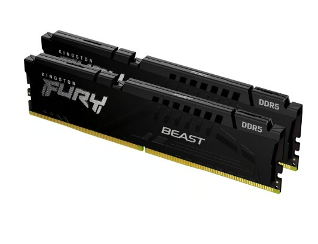
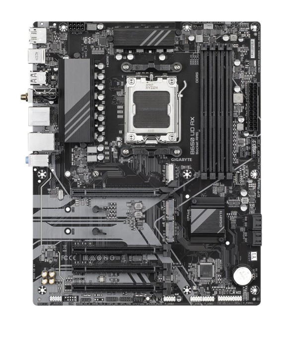
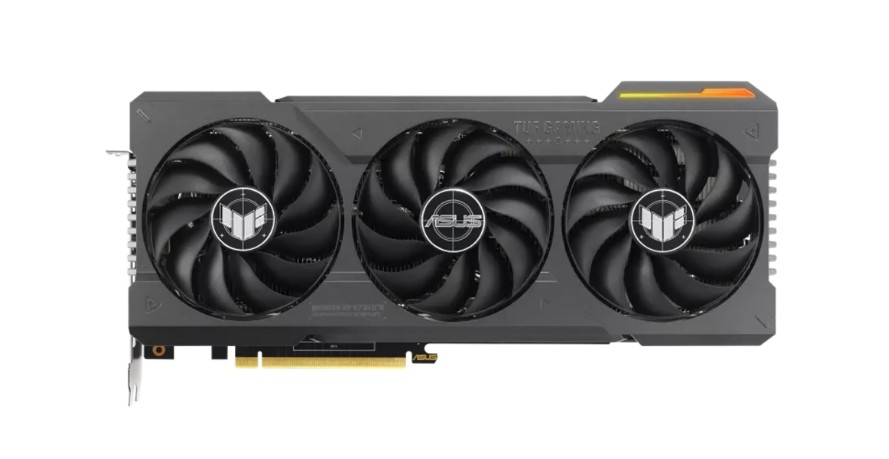
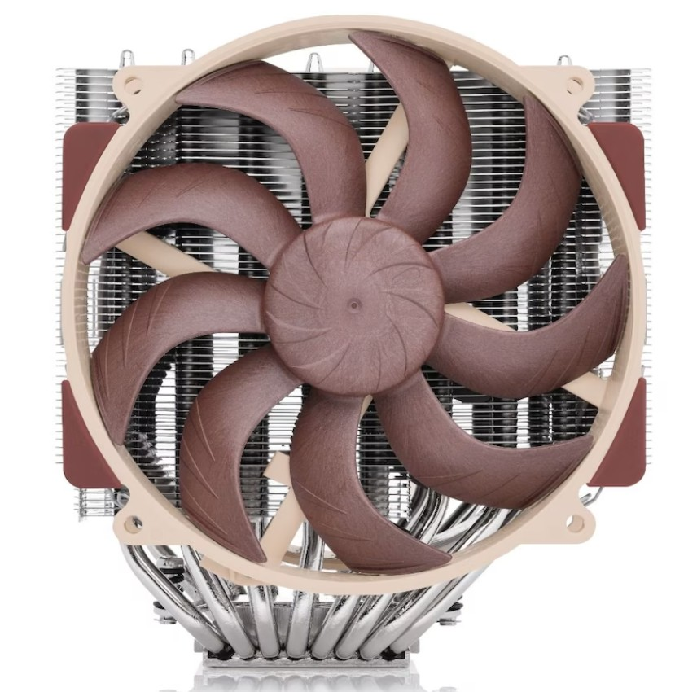
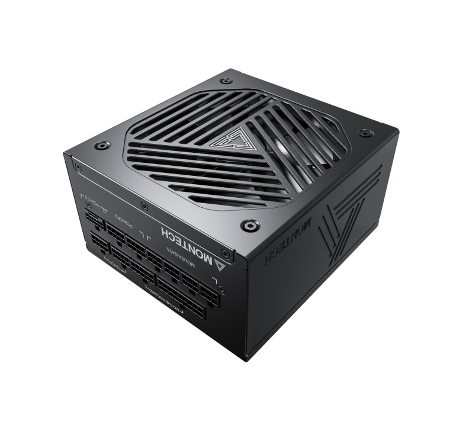
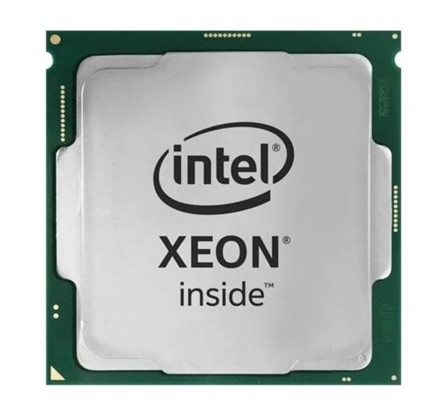

En harddisk (HDD) er en lagringsenhet som bruker roterende plater og magnetiske hoder for å lese og skrive data. Den er kjent for å tilby stor lagringskapasitet til en lavere pris sammenlignet med SSD-er, men har lavere lese- og skrivehastigheter.

RAM (Random Access Memory) er en type midlertidig lagring som datamaskinen bruker for å raskt få tilgang til data og kjøre programmer. Det er en viktig komponent for systemets ytelse, da det påvirker hvor raskt og effektivt datamaskinen kan behandle informasjon.

Et hovedkort (motherboard) er den sentrale kretskortet i en datamaskin som kobler sammen alle komponentene, inkludert CPU, RAM, lagringsenheter og grafikkort. Det fungerer som et nav for kommunikasjon mellom disse komponentene, og gir strøm og tilkoblinger som er nødvendige for at systemet skal fungere.

En grafikkprosessor (GPU) er en spesialisert elektronisk krets som akselererer prosesseringen av grafikk og bilder, noe som er avgjørende for oppgaver som gaming og videoredigering. Den avlaster CPU-en ved å håndtere komplekse grafikkberegninger, og forbedrer dermed den generelle ytelsen til datamaskinen.

Et grafikkort, også kjent som GPU (Graphics Processing Unit), er en komponent i datamaskinen som håndterer grafikk og bildebehandling. Det er spesielt viktig for oppgaver som gaming, videoredigering og 3D-modellering, da det avlaster prosessoren ved å utføre komplekse grafikkberegninger.

En PSU (Power Supply Unit) er en komponent i en datamaskin som konverterer strøm fra en stikkontakt til brukbare spenninger for de interne komponentene. Den sørger for stabil og pålitelig strømforsyning til hovedkort, prosessor, grafikkort og andre enheter.

En prosessor, også kjent som CPU (Central Processing Unit), er hjernen i en datamaskin som utfører instruksjoner fra programmer. Den består av millioner av transistorer som arbeider sammen for å utføre beregninger og styre andre komponenter i systemet.